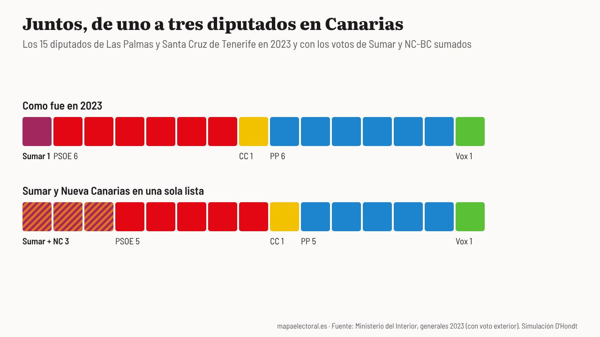

Actualidad · Una papeleta en las islas · Canarias
Nueva Canarias, Podemos, IU y Sumar se unen en Canarias: con los votos de 2023, la suma habría pasado de uno a tres diputados
Juntos le habrían quitado un escaño al PP en Las Palmas y otro al PSOE en Santa Cruz de Tenerife, este por unos 1.600 votos. Canarias es una de las dos comunidades donde el Frente Amplio y Podemos irán juntos el 29N.
Por Nacho G. del Álamo · · Actualizado el

Cada párrafo lleva una etiqueta: dato (cifra comprobable con las fuentes), patrón (relación que se repite, sin afirmar la causa), hipótesis (explicación posible, sin dos fuentes independientes) o contexto (hechos y declaraciones publicados por otros, enlazados). Cómo verificamos
ContextoDe las 52 circunscripciones, la izquierda a la izquierda del PSOE solo ha conseguido ir en una sola papeleta en cinco, y dos son canarias. El jueves, a un día de que cerrara el plazo, Nueva Canarias-Bloque Canarista, Podemos, Izquierda Unida Canaria y Movimiento Sumar anunciaron que irán juntos al 29N como Unidad del Pueblo Canario, según RTVC, y la coalición quedó entre las pocas que unen al Frente Amplio y a Podemos, según Europa Press y Efe.
ContextoNoemí Santana, secretaria general de Podemos Canarias, lo anunció con una frase de ocasión: «En Canarias hemos estado a la altura del momento histórico», según RTVC. Ayoze Corujo, secretario de Organización de Nueva Canarias, fue más lejos: «después de tres décadas la izquierda nacionalista y la izquierda confederal se ha vuelto a encontrar», según Moncloa.com.
ContextoHe querido saber cuánto valía esa suma con los votos que ya existen. Así que he cogido las generales de julio de 2023 en Las Palmas y en Santa Cruz de Tenerife, he sumado los votos de Sumar, que entonces ya llevaba dentro a Podemos e IU, y los de Nueva Canarias, que fue sola, y he vuelto a repartir los escaños con la ley D'Hondt.
DatoEl resultado es más grande que en Cataluña, donde la suma de ERC y Sumar apenas daba un diputado más. En Canarias, Sumar sacó en 2023 un diputado de los 15 que reparten las dos provincias. Juntos, Sumar y Nueva Canarias habrían sacado tres.
Ver la tabla por provincia
Las Palmas: el escaño que se queda el PP
DatoEn Las Palmas, que elige ocho diputados, Sumar sacó en 2023 el 10,3% de los votos, 54.369, y un escaño. Nueva Canarias sacó el 8%, 42.430 votos, y se quedó sin nada, a unos 3.200 votos del último escaño, que fue para el PP. Juntos suman 96.799 votos. Divididos entre dos, 48.400, por encima de los 45.619 del tercer cociente del PP. El segundo escaño de la lista conjunta se lo habría quitado al PP, que habría bajado de tres a dos.
DatoNo habría sido por poco. Con los votos de 2023, la lista conjunta podría haber perdido unos 5.500 votos y habría seguido sacando dos diputados.
Tenerife: 1.600 votos
DatoEn Santa Cruz de Tenerife, que elige siete, la historia es otra. Sumar se quedó sin escaño en 2023 con 53.632 votos, el 10,8%: le faltaron 1.565 para quitarle al PSOE su tercer diputado, como contamos en una pieza anterior. Nueva Canarias, que en la provincia occidental es mucho más pequeña, sacó 3.165 votos. Suficientes. Juntos habrían sumado 56.797 votos, unos 1.600 más que el tercer cociente del PSOE, y el escaño habría cambiado de manos.
PatrónLa diferencia entre las dos provincias está en dónde estaban los votos. En Las Palmas, Nueva Canarias tenía casi tantos como Sumar; en Tenerife, apenas un 6% de lo que tenía Sumar. En un caso la suma crea un escaño casi entero; en el otro, solo empuja uno que ya estaba al borde.
ContextoPablo Simón, politólogo, lo explicaba en una frase que sirve para estas cuentas:
«lo que es más relevante para el reparto de escaños no es sólo el porcentaje de apoyos de cada partido, sino sobre todo dónde los obtiene»
Lo que decían sus números
ContextoEn Nueva Canarias hacían esta cuenta desde febrero. Corujo recordó entonces que su partido y Sumar habían pasado de 95.000 votos en Las Palmas en 2023 y habló de «hasta dos representantes de la izquierda canaria» en el Congreso, según Efe. Para Santa Cruz de Tenerife dejó la puerta abierta: «también se abre la posibilidad de obtener un escaño de obediencia canaria si se consolidan los acuerdos».
ContextoRomán Rodríguez, histórico dirigente de Nueva Canarias, lo había escrito el 4 de octubre en una columna en Canarias7: «Convencidos de que esa unidad en Canarias permitirá lograr representación en el Congreso». Y lo resumía en cuatro palabras: «Juntos en una sola papeleta».
Lo que la suma no garantiza
HipótesisTodo esto es aritmética sobre papel. Supone que todos los votantes de Sumar y de Nueva Canarias de 2023 votarán la lista conjunta, y no tiene por qué ser así. Drago Canarias, que no está en la coalición, se presenta por su cuenta, con Alberto Rodríguez de cabeza de lista en Santa Cruz de Tenerife, según RTVC. Si recoge votos de ese espacio, el margen de 1.600 votos de Tenerife es pequeño.
ContextoEnfrente también hay movimiento. Coalición Canaria y Primero Canarias han pactado candidaturas conjuntas en las dos provincias, según RTVC. Y Movimiento Sumar presume del acuerdo: su coordinadora, Marisol Collado, lo llamó «el acuerdo más amplio que hay en todo el Estado», según Moncloa.com. Las cabezas de lista se conocerán en los próximos días.
DatoPara el 29N, la cuenta queda así: con los votos de 2023, la lista que ahora se llama Unidad del Pueblo Canario habría sacado tres diputados en Canarias en lugar de uno, quitándole uno al PP en Las Palmas y otro al PSOE en Santa Cruz de Tenerife, este último por unos 1.600 votos.
Explora el mapa por sección · Más piezas: El mapa final de coaliciones de la izquierda · Rufián y la suma de ERC y Sumar
Método y fuentes
- Qué se compara
- El reparto de escaños de 2023 en Las Palmas y Santa Cruz de Tenerife tal como fue y el que habría salido si los votos de Sumar y de Nueva Canarias-Bloque Canarista se hubieran sumado en una sola lista, con la regla D'Hondt.
- Límites
- Es una simulación aritmética, no una previsión: supone que todos los votantes de Sumar y de NC-BC en 2023 votarían la lista conjunta. En 2023 Sumar ya incluía a Podemos e IU. Drago Canarias se presenta por separado y no se puede separar qué parte del voto de Sumar en 2023 podría irse con ella. Se usan los votos por mesa de Interior con el voto exterior, que pueden diferir en unos pocos votos del escrutinio oficial.
- Cómo se calcula
- Porcentajes sobre votos a candidaturas, salvo la participación, que es sobre el censo. Cifras reproducibles con los scripts del expediente de la pieza. Metodología de Actualidad · Metodología del Atlas
- Fuentes
- Ministerio del Interior, resultados electorales por mesa y voto CERA (municipio 999), vía pollspaindata
- RTVC, Podemos, Nueva Canarias, IU y Sumar irán juntos al 29N (15-10-2026)
- Última Hora (Europa Press y Efe), Frente Amplio y Podemos consuman su fractura (17-10-2026)
- Diario de Avisos (Efe), Nueva Canarias aspira a dos diputados (19-2-2026)
- Moncloa.com, Unidad del Pueblo Canario (16-10-2026)
- Román Rodríguez, Una sola papeleta, Canarias7 (4-10-2026)
- Ara, entrevista a Pablo Simón
- Autoría
- Nacho G. del Álamo
- Revisión de datos y texto
- Nacho G. del Álamo, 17 de octubre de 2026
- Publicado · actualizado
- 17 de octubre de 2026 · 20 de octubre de 2026
- Correcciones
- 20-10-2026: la lista de fuentes decía «sin voto exterior (CERA)», pero los cálculos sí incluyen el voto exterior, como indican los gráficos y los límites. Se corrige la fuente. Las cifras no cambian.
Serie «Camino al 29N»: 98 piezas
- 1,9 millones de votos no eligieron a nadie en 2023: en Teruel, Lleida y Soria, uno de cada tres
- Feijóo y Sánchez chocan por las pensiones en un censo con 10,2 millones de electores de 65 años o más: superan a los de 18 a 34 en 49 de las 52 provincias
- El CIS de Tezanos da al PSOE 11,8 puntos de ventaja: en las tres generales desde 2019 sobrestimó su margen sobre el PP entre 1 y 6,9 puntos
- Rufián admite «He fracasado»: con los votos de 2023, ERC y Sumar juntos habrían sacado un solo diputado más en Cataluña, y por 126 votos
- Ocupación: en las provincias con más demandas ante los juzgados, Vox sacó el 15,9% en 2023, frente al 11,5% en las que menos
- Frente Amplio y Podemos solo irán juntos en cinco provincias: en las otras 47, Sumar sacó 26 de sus 31 diputados en 2023
- El voto de fuera, el del «pucherazo», le dio un escaño al PP en 2023
- PSOE y Frente Amplio, juntos al Senado: con los votos de 2023, su lista habría ganado al PP en 17 provincias donde este sacó tres senadores
- Albiol saca en Badalona tres veces los votos del PP
- Dimite la lista del PSOE en Palencia tras imponer Ferraz a Martínez Seijo: en 2023 al partido le faltaron 7.097 votos para un segundo diputado
- Estás aquíNueva Canarias, Podemos, IU y Sumar se unen en Canarias: con los votos de 2023, la suma habría pasado de uno a tres diputados
- Separados el 29N, como en 2015: con los votos de aquel año, una sola papeleta de Podemos e IU habría sacado 86 diputados, no 71
- Delgado contra Montero en Madrid: con los votos de 2023, Podemos necesitaría uno de cada cinco votos de Sumar para sacar escaño
- PP y Vox negocian el Senado: con los votos de 2023, sumar a Vox le devolvería a la derecha 19 provincias frente a la lista de PSOE y Frente Amplio
- Trump dice que España fue «invadida»: los vecinos nacidos fuera pasaron de 6,5 a 10 millones en siete años, y donde más crecieron Vox no sacó más votos
- Feijóo y Saiz se pelean por la hucha de las pensiones: donde más pesan en la renta, PP y PSOE se llevaron el 72,8% del voto, casi diez puntos más que donde menos
- Abascal llama a Galicia «espina clavada»: Vox no llegó al 5% en seis de cada diez secciones gallegas en 2023, y en el resto de España, en una de cada nueve
- El 29N deja en el aire la subida de tres millones de empleados públicos: en Teruel o Soria hay el doble por habitante que en Barcelona, y donde más pesan, Sumar sacó un tercio menos
- El Constitucional deja sin voto a los nietos: los españoles adultos de América Latina crecen casi cinco veces más rápido y uno de cada tres está inscrito en Madrid
- En los barrios con más autónomos, el PP saca 13 puntos al PSOE
- Ver las 98 piezas de la serie
Más datos: elecciones generales del 29N de 2026: fecha y escaños por provincia · más piezas sobre escaños y sistema electoral.
Sigue leyendo
- EncuestasEncuestas de las elecciones generales del 29N: todas, con sus escaños, actualizadas cada día
- PactosSimulador de pactos del 29N: ¿quién puede gobernar? Decide qué vota cada partido
- Israel, las cuentas del 61Netanyahu se queda a siete escaños de la mayoría: con el 78% escrutado, solo Liberman le daría los 61
- Serbia, distrito a distritoVučić ganó en los 25 distritos de Serbia en 2023; los estudiantes le han ganado en 18 y en Zaječar el recuento va por 31 votos
- Brasil, estado a estadoLula pasó de perder por 2,2 millones de votos a ganar por 4,4: en el mapa de Brasil solo Minas Gerais cambió de color
- ActualidadTodas las piezas de actualidad
- AtlasAtlas de las anomalías electorales